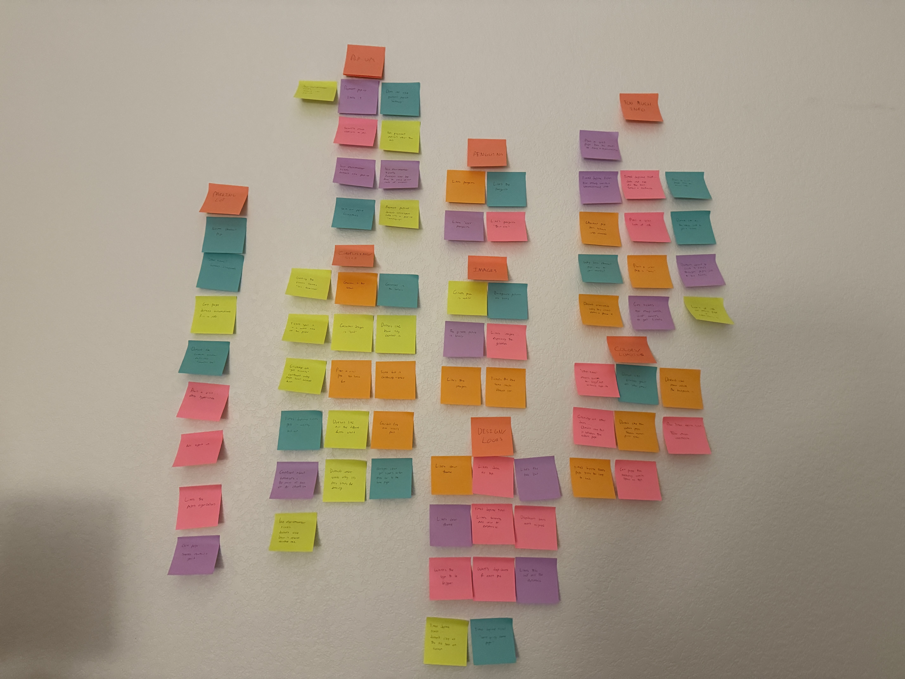
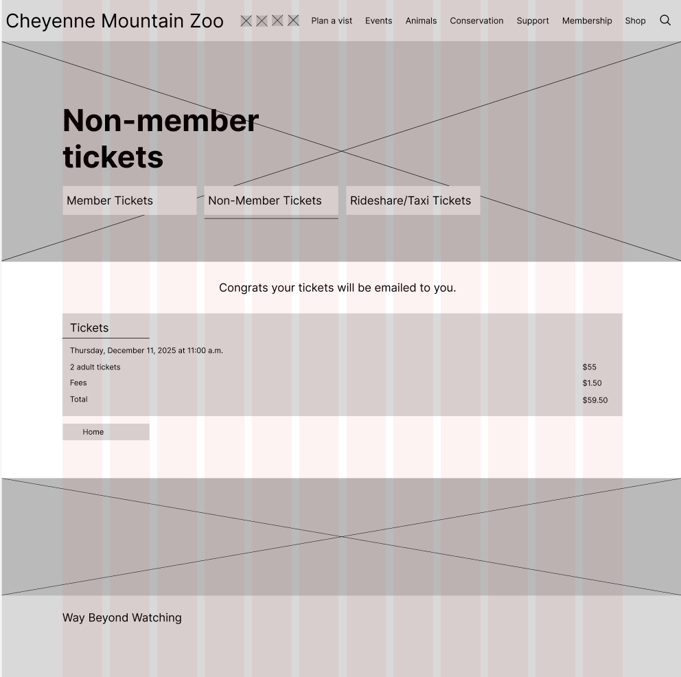
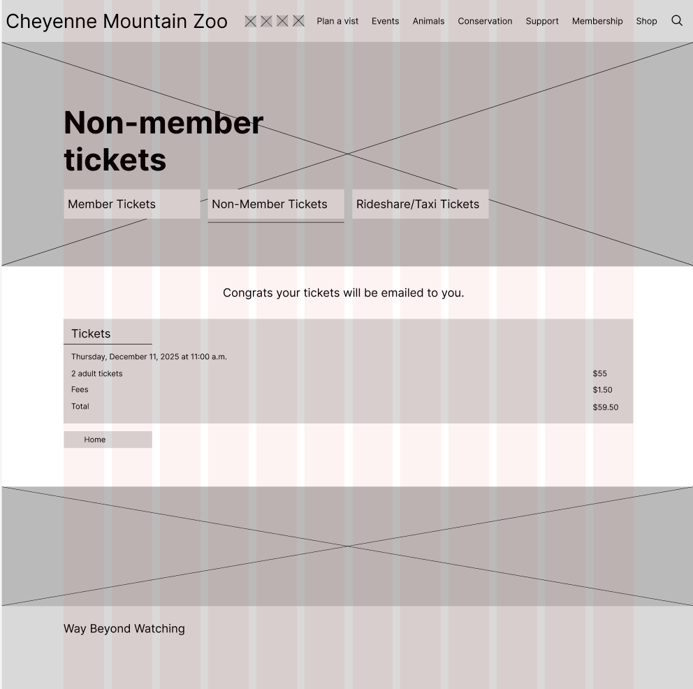
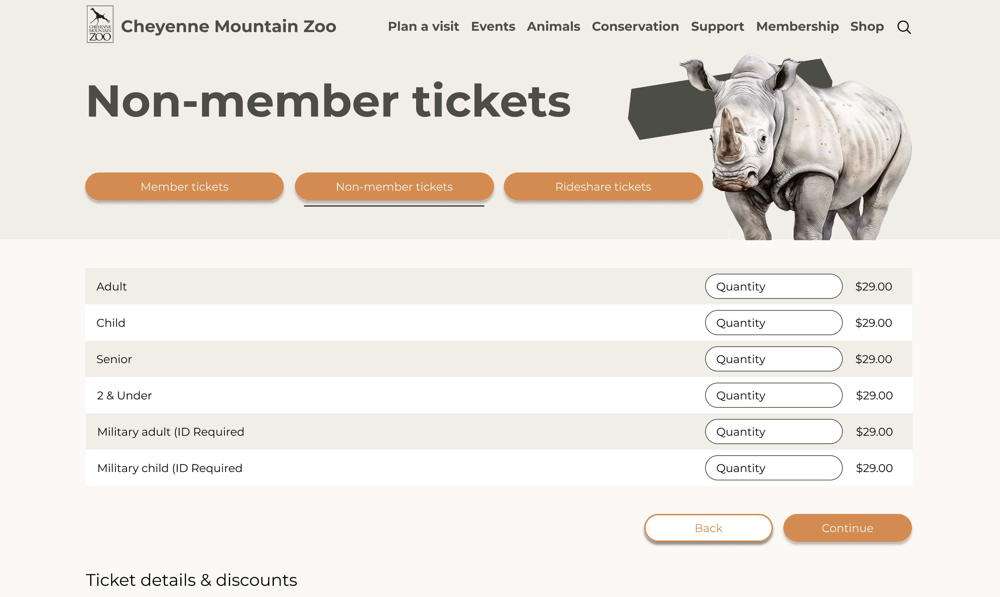
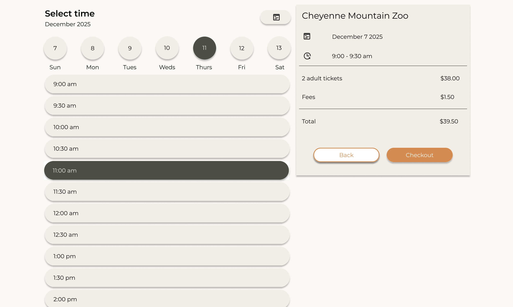
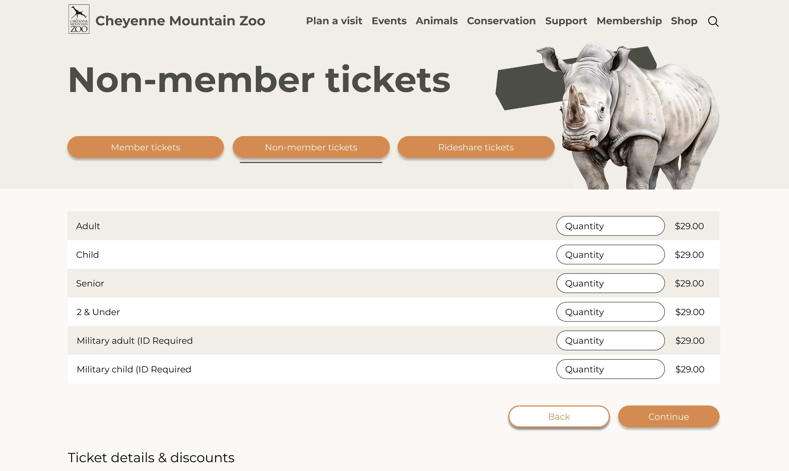
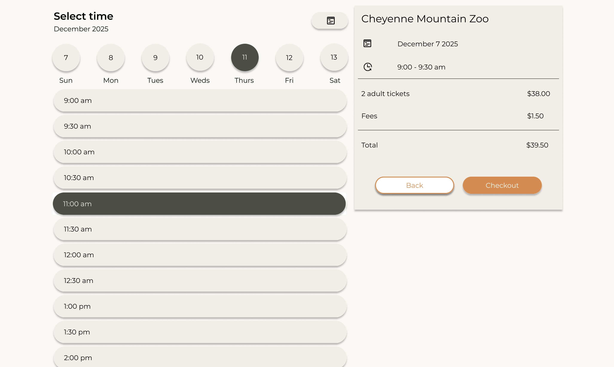
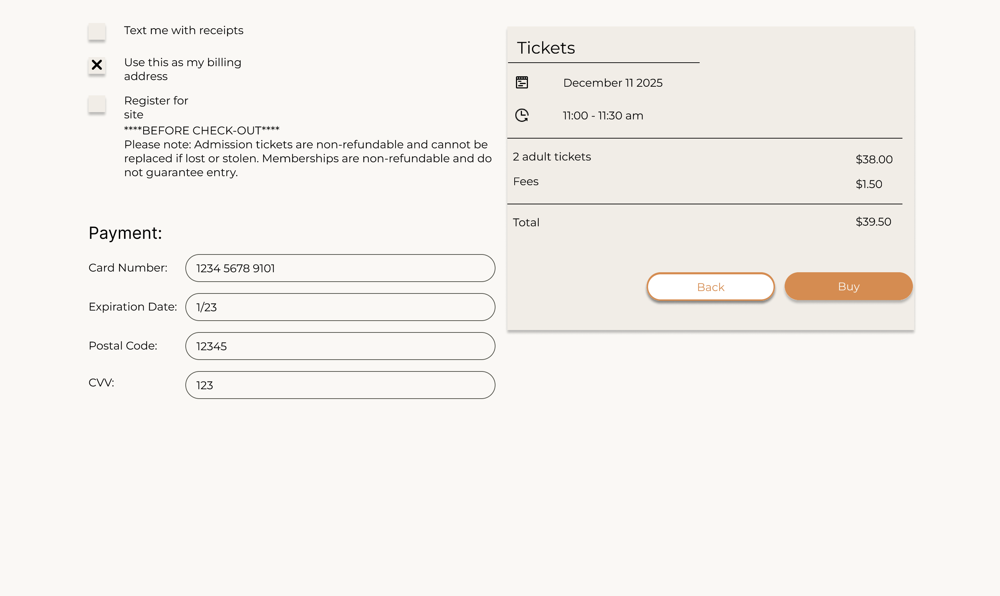
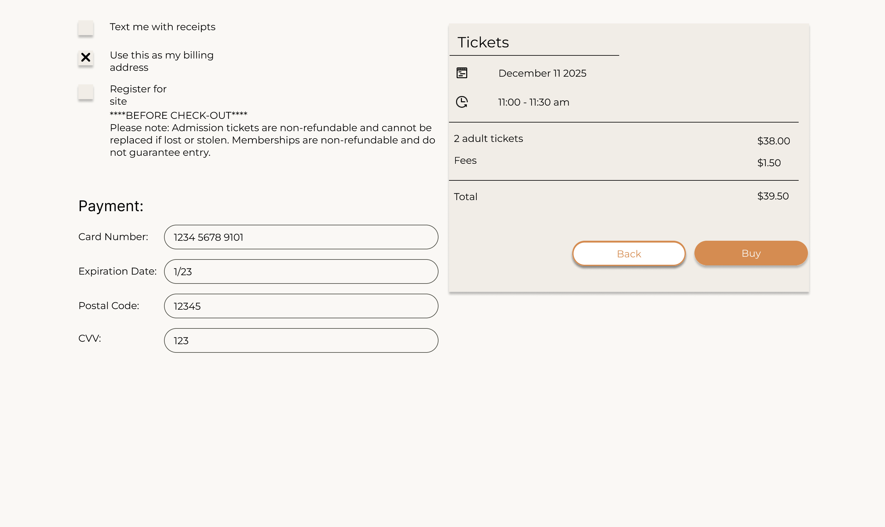

Cheyenne Mountain Zoo
Website Redesign
UX Case Study
Project Overview
ROLE
I served as the UX designer for this project in my UX 1 design class. I was responsible for conducting user research, creating wireframes and prototypes, and developing design solutions to improve the zoo's website experience.
TOOLS
Figma
This project centered on redesigning the Cheyenne Mountain Zoo website to enhance user experience and simplify the ticket purchasing process. The redesign aimed to make essential visitor information more accessible and intuitive for guests planning their zoo visit.
Figma Final PrototypeThe Challenge
Problem Statement
The current Cheyenne Mountain Zoo website presents navigation challenges for visitors trying to plan their trip and purchase tickets. Users struggle to find key information about exhibits, operating hours, and special events, leading to frustration and abandoned booking attempts.
Goals
- Simplify the ticket purchasing process and reduce checkout abandonment
- Create better information architecture to showcase zoo attractions and animals
- Enhance accessibility for all users
Research Phase
Usability Testing
I conducted usability testing on the current Cheyenne Mountain Zoo website with 5 participants to identify pain points and areas for improvement.
- Navigation Confusion: Users had difficulty locating where to purchase a ticket and why it took so many clicks.
- Ticket Purchase Friction: The checkout process had too many steps and unclear pricing options
- Information Overload: Too much text on pages made it difficult to scan for key details
Affinity Mapping
After gathering user feedback, I organized insights into themes using affinity mapping. Key themes that emerged included navigation issues, booking complexity, and need for visual hierarchy.
How Might We Questions
From the affinity mapping exercise, I developed three key "How Might We" questions to guide the design process:
- How might we improve the looks of Cheyenne Mountain Zoo?
- How might we make the Cheyenne Mountain Zoo website less confusing to navigate?
- How might we make important information for Cheyenne Mountain Zoo more relevant and stand out?
Define
Refined Problem Statement
Zoo visitors need a clear, intuitive way to plan their visit and purchase tickets because the current website's complex navigation and checkout process creates frustration and prevents them from easily purchasing tickets.
Proposed Task Flow
I mapped out an optimized user flow for the ticket purchasing journey. The task was to create a better experience for a user purchasing 2 adult tickets for Thursday, December 11 at 11:00 am, starting from the homepage and ending with a confirmation screen.
My proposed flow reduces steps from the original 7-step process to 4 streamlined steps, while maintaining key requirements:
- Tickets must be purchased for a specific day and time
- Tickets must be purchased for a specific age range (adult)
- Flow starts on the homepage and ends with email confirmation
Ideation & Design
Low Fidelity Wireframes
I started with paper sketches to quickly explore different layout options and information hierarchies. The focus was on simplifying navigation and making the ticket purchase path more obvious.
Key screens included:
- Homepage redesign: Simplified layout with prominent "BUY Tickets" call-to-action and clear navigation
- Ticket selection screen: Consolidated all ticket information (date, time, quantity, pricing) into a single, easy-to-scan view with personal information fields on the same page
Mid Fidelity Wireframes
Moving to digital wireframes, I refined the information architecture and added more detail to key screens. These wireframes show the complete ticket purchasing flow from homepage to confirmation.
 

Brand Foundational Elements
I developed a fresh visual identity that maintains connection to the zoo's natural setting while feeling modern and accessible:
- Typography: Montserrat font family for headers and body text, ensuring readability and accessibility with minimum 16px body text
- Icons: Consistent 24x24px icon set for navigation and interactive elements
- Color Palette: Earthy olive greens paired with persian orange accents, viridian success green, and YinMn blue for informational elements
Prototyping & Testing
High Fidelity Interactive Prototype V1
I created a fully interactive prototype with the new visual design applied. Key improvements included:
- Homepage redesign: Cleaner hero section with prominent "Buy Tickets" button and engaging animal imagery
- Simplified ticket flow: Streamlined from 7 steps to 4 steps - ticket type selection, date/time selection, personal information, and confirmation
- Clear pricing display: Ticket pricing and fees shown upfront with running total throughout the process
- Improved information hierarchy: Important details like date, time, and pricing displayed prominently with consistent styling
User Testing Results
I conducted usability testing with 3 new participants using the V1 prototype. Key insights:
- Success: All users completed the ticket purchase flow without assistance
- Improvement Needed: Users wanted more prominent display of operating hours
- Positive Feedback: Users loved the animal pictures and visual design
Final Design
High Fidelity Interactive Prototype V2
Based on user testing feedback, I made the following improvements:
- Simplified personal information form: Used a single column layout so that the ticket information could scroll along the screen woth the user.
- Added payment screen: Introduced a dedicated payment page within the information sectionm keeping checkout process organized and reducing cognitive load
- Enhanced confirmation design: Moved ticket summary to the top with clear visual hierarchy, removed unnecessary navigation tabs, and added footer with zoo contact information and newsletter signup
- Improved visual consistency: Standardized button styles and spacing throughout the entire flow for a more polished, professional appearance, including adding a secodnary button.
- Better error prevention: Added checkboxes with clear labels for optional features like "Text me with receipts" and important disclaimers before checkout
 



 


Results & Impact
Design Improvements
- Streamlined Checkout Flow: Reduced from 7 steps to 4 steps, eliminating unnecessary navigation and form pages
- Fewer Clicks to Purchase: Users can now complete ticket purchase in 4 clicks from homepage instead of the original 8+ clicks
- Improved Task Completion: All 5 usability test participants successfully completed the ticket purchase without assistance in the final design
- Enhanced Visual Hierarchy: Clear pricing display and prominent CTAs made key information immediately scannable
Key Takeaways & Learnings
What I Learned
- The importance of testing early and often - user feedback in the wireframe stage saved significant rework time
- Small changes like prominent operating hours can have big impacts on user confidence and satisfaction
- Iterative design based on real user feedback leads to better outcomes than trying to get everything perfect the first time
How I Would Improve This Design Further
- Add real-time availability indicators: Show ticket availability for different time slots to help users make informed decisions
- Implement progress indicators: Add a visual progress bar showing users where they are in the checkout process
- Mobile-first refinements: Further optimize the mobile experience with larger touch targets and simplified forms
Skills Developed
- User research and usability testing methodologies
- Information architecture and navigation design
- E-commerce checkout flow optimization
- Iterative design based on user feedback
Next Steps
With more time and resources, I would conduct A/B testing on the new design with real zoo visitors, implement analytics to track conversion rates, and continue iterating based on actual usage data. I'd also explore adding personalization features like saving favorite animals or creating custom visit itineraries.